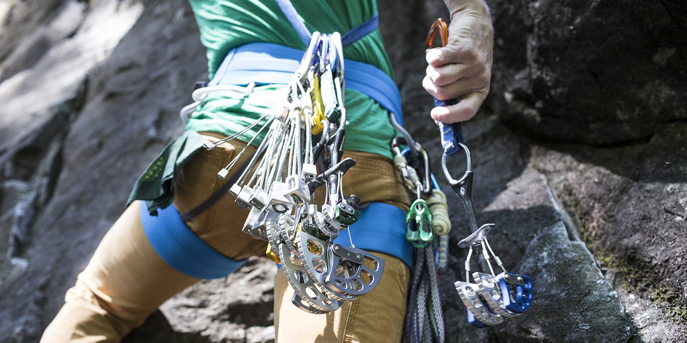
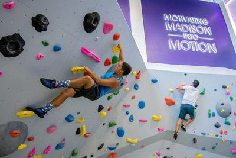

1 / 3

Trad climbing
Traditional climbing is pretty much the OG type of climbing. Usually, a climber on a trad route will have tons of
safety gear, ranging from cams and hexes to nuts, chocks, and tricams. That's on top of the rope and clips that a
sport climber might employ. All of this gear makes trad climbing one of the harder types of climbing to get into,
and certainly the hardest on this list.
2 / 3

Top rope
Top rope climbing involves an anchor at the top of the route and an extra person called a belayer, who basically
catches the climber in the event of a fall. The climber gets clipped or tied into the rop, which goes all the way
up to the anchor and back down to the belayer, who usually stands some distance away from the wall. In the event that
the climber falls (whether it be from a slip or a failed dyno), the belayer uses their own bodyweight to catch them.
This precludes the need for most of the gear used by trad climbers.
3 / 3

Bouldering
Bouldering may be one of the easiest climbing disciplines to get into. As the name implies, it just involves large rocks
or boulders. The common pieces of equipment used in bouldering are crash pads (which are basically just big mattresses)
and climbing shoes (it should be noted that climbing shoes are common for the previous couple types of climbing). The
magnitude (or lack thereof) of gear needed to boulder is one of the biggest attractors to bouldering in my mind. Now, some
may rightfully wonder how it's safe to climb without a rope to break your fall. The answer to this is twofold. The
aforementioned crash pad cushions any fall, and bouldering routes (called problems instead) are usually less than a few
meters. The tallest bouldering problems are about 10 meters, or about 30 feet. Competetive bouldering ensurest that the
climber will not go above about 3 meters, or about 10 feet.
❮
❯